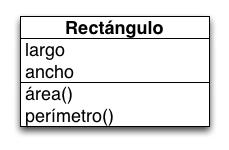

Java OO
Programación Orientada a Objetos
clase

public class Rectangulo {
private double largo;
private double ancho;
}
visibilidad
- métodos y propiedades son miembros de la clase
- visibilidad: capacidad de leer o escribir el valor de una propiedad o de ejecutar un método
visibilidad
public: visible para cualquier otra clasepackage: visible para las clases del mismo paquete al que perteneceprotected: visible para las subclases de su claseprivate: visible sólo para los otros miembros de su clase
public class Ejemplo {
public int soyUnaPropiedadPublic;
int soyUnaPropiedadPackage;
protected int soyUnaPropiedadProtected;
private int soyUnaPropiedadPrivate;
}
métodos
public class Rectangulo {
private double largo;
private double ancho;
// visibilidad: public
// tipo de retorno: double
// nombre: area
// argumentos: ninguno
public double area() {
return largo * ancho;
}
public double perimetro() {
return (2 * largo) + (2 * ancho);
}
}
métodos
public class Ejemplo {
// visibilidad: public
// tipo de retorno: void (no retorna nada)
// nombre: saludar
// argumentos: nombre
private void saludar(String nombre) {
System.out.println("Hola " + nombre);
}
private double promediar(double valor1, double valor2,
double valor3) {
return (valor1 + valor2 + valor3) / 3;
}
}
constructor
- métodos especiales, permiten crear una nueva instancia a partir de la clase
public class Rectangulo {
private double largo;
private double ancho;
public Rectangulo() {
// this es un miembro especial de la clase
// se refiere a la instancia cuyo código está en ejecución
this.largo = 0;
this.ancho = 0;
}
public Rectangulo(double largo, double ancho) {
this.largo = largo;
this.ancho = ancho;
}
// ...
}
constructor
- cuando no se especifica se crea un constructor vacío
- puede haber más de un constructor en la misma clase
- los argumentos no necesariamente tienen que coincidir con las propiedades de la clase
public class Rectangulo {
private double largo;
private double ancho;
public Rectangulo(Cuadrado cuadrado) {
this.largo = cuadrado.getLado();
this.ancho = cuadrado.getLado();
}
}
¿destructor?
- en Java no existe un método para destruir una instancia de un objeto
- la destrucción de objetos la realiza la máquina virtual con un algoritmo de recolección de basura (GC)
- si el objeto no está siendo utilizado (referenciado) automáticamente se convierte en candidato para ser destruido por el GC
instanciación
- al invocar un constructor se crea una nueva instancia de la clase
public class Main {
public static void main(String args[]) {
// se crea la instancia y se pierde por no asignarla a una variable
new Rectangulo(5, 6);
Rectangulo rectangulo = new Rectangulo(8, 10);
}
}
encapsulamiento
- el acceso a propiedades se realiza únicamente a través de métodos, nunca directamente
- se les llama accesores de propiedades o getters y setters
- estos métodos siguen una nomenclatura especial:
getXXX/setXXX/isXXX
encapsulamiento
public class Rectangulo {
private double largo;
private double ancho;
public void setLargo(double largo) {
this.largo = largo;
}
public double getLargo() {
return this.largo;
}
public void setAncho(double nuevoAncho) {
ancho = nuevoAncho;
}
public double getAncho() {
return this.ancho;
}
}
encapsulamiento
public class Automovil {
private boolean detenido;
public void setDetenido(boolean detenido) {
this.detenido = detenido;
}
public boolean isDetenido() {
return this.detenido;
}
}
ciclo de vida de un objeto
- Se carga la clase en memoria (si es la primera vez que se utiliza)
- Se ejecutan los inicializadores estáticos de la clase
- Se crea una nueva instancia utilizando
new - Se reserva memoria para el nuevo objeto y se crea una referencia interna al mismo
- Se ejecuta cualquier código inicializador presente (bloques o variables)
- Se invoca al constructor
- El objeto es utilizado a través de sus métodos visibles
- Cuando ningún otro código lo está utilizando se convierte en candidato a ser destruido
- El garbage collector (GC) invoca al método
finalize()(si está presente) - GC recupera la memoria asignada al objeto y elimina su referencia interna
public class Hijo extends Padre {
private double doble;
private long[] arreglo = new long[5];
{
System.out.println("Ejecutando el bloque inicializador de Hijo");
for (int i = 0; i < arreglo.length; i++) {
arreglo[i] = arreglo.length - i;
}
}
public Hijo() {
System.out.println("Ejecutando el constructor de Hijo");
this.doble = 1.0 / 3.0;
}
public Hijo(double doble) {
this.doble = doble;
}
}
public class Padre extends Abuelo {
protected byte octeto;
protected boolean booleano = true;
{
System.out.println("Ejecutando bloque inicializador de Padre");
booleano = !booleano;
}
public Padre() {
System.out.println("Ejecutando el constructor de Padre");
this.octeto = 5;
}
}
public class Abuelo {
protected short enteroChico = -1;
{
System.out.println("Ejecutando bloque inicializador de Abuelo");
enteroChico = 1;
}
public Abuelo() {
System.out.println("Ejecutando el constructor de Abuelo");
}
}
public class Main {
public static void main(String[] args) {
Hijo hijo = new Hijo();
System.out.println("hijo = " + hijo);
}
}
recolector de basura (GC)
- a diferencia de C y C++, en Java la administración de memoria es automática
- cuando un objeto deja de ser utilizado se convierte en candidato a ser eliminado
- un objeto no utilizado es considerado basura, el GC se encarga de disponer de la memoria que el objeto ocupe
- un objeto deja de ser utilizado cuando ninguna variable o estructura de datos lo referencia
- el GC libera y desfragmenta el espacio ocupado por todos los objetos no referenciados que encuentre al ser ejecutado
- antes de eliminar un objeto el GC ejecutará el método
finalize()en el objeto
recolector de basura (GC)
- el GC es autónomo con respecto al programador
- usualmente sólo se ejecuta si necesita liberar espacio para un nuevo objeto o evitar un
OutOfMemoryError - evita el problema de las referencias colgadas (dangling references)
- la ejecución del GC consume tiempo que puede interferir con el tiempo de procesamiento de la aplicación misma, de esta forma siempre se debe reparar en el manejo eficiente de memoria a la hora de diseñar una pieza de software en Java
- el GC no es garantía de que siempre vaya a haber memoria disponible, se debe hacer un buen manejo de las referencias y utilizar únicamente las estrictamente necesarias
- se puede forzar la ejecución del GC utilizando
System.gc()
public class ElObjeto {
private String mensaje = "el tiempo pasa pronto y todo tiene su final";
public String getMensaje() {
return mensaje;
}
@Override
protected void finalize() throws Throwable {
System.out.println("Me fuí con las botas puestas ...");
}
}
el objeto no es recolectado
public class Main {
public static void main(String[] args) {
ElObjeto elObjeto = new ElObjeto();
System.out.println("elObjeto.getMensaje() = " + elObjeto.getMensaje());
System.gc();
}
}
elObjeto.getMensaje() = el tiempo pasa pronto y todo tiene su final
Process finished with exit code 0
el objeto si es recolectado
public class Main {
public static void main(String[] args) {
ElObjeto elObjeto = new ElObjeto();
System.out.println("elObjeto.getMensaje() = " + elObjeto.getMensaje());
elObjeto = null;
System.gc();
}
}
elObjeto.getMensaje() = el tiempo pasa pronto y todo tiene su final
Me fuí con las botas puestas ...
Process finished with exit code 0
el objeto si es recolectado
public class Main {
public static void main(String[] args) {
if (args.length == 0) {
ElObjeto elObjeto = new ElObjeto();
System.out.println("elObjeto.getMensaje() = " + elObjeto.getMensaje());
}
System.gc();
}
}
elObjeto.getMensaje() = el tiempo pasa pronto y todo tiene su final
Me fuí con las botas puestas ...
Process finished with exit code 0
el objeto no es recolectado
public class Main {
public static void main(String[] args) {
Object[] objetos = new Object[10];
ElObjeto elObjeto = new ElObjeto();
System.out.println("elObjeto.getMensaje() = " + elObjeto.getMensaje());
objetos[0] = elObjeto;
elObjeto = null;
System.gc();
}
}
elObjeto.getMensaje() = el tiempo pasa pronto y todo tiene su final
Process finished with exit code 0
el objeto si es recolectado
public class Main {
public static void main(String[] args) {
Object[] objetos = new Object[10];
ElObjeto elObjeto = new ElObjeto();
System.out.println("elObjeto.getMensaje() = " + elObjeto.getMensaje());
objetos[0] = elObjeto;
elObjeto = null;
objetos = null;
System.gc();
}
}
elObjeto.getMensaje() = el tiempo pasa pronto y todo tiene su final
Me fuí con las botas puestas ...
Process finished with exit code 0
sobrecarga y sobreescritura de métodos
sobrecarga (overload)
- todo método tiene una firma (signature): su nombre y el número y tipo de parámetros
- la firma de un método es única
- dos métodos pueden tener el mismo nombre si tienen diferente firma (la diferencia recae entonces sobre el número o tipo de los parámetros)
- la firma no incluye el tipo de retorno, la lista de excepciones, ni los nombres de los parámetros
sobrecarga (overload)
public enum Direccion {
DERECHA,
IZQUIERDA
}
public class Automovil {
private float direccion;
public void girar(float grados) {
this.direccion = grados
}
public void girar(Direccion direccion) {
switch (direccion) {
case IZQUIERDA:
this.direccion += -90.0f;
break;
case DERECHA:
this.direccion += 90.0f;
}
}
}
sobreescritura (override)
- reemplazar la implementación de un método de la superclase con una implementación en la subclase
- las firmas de los métodos deben coincidir
- el método de la superclase debe ser accesible desde la subclase para poder ser sobreescrito
sobreescritura (override)
public class PoligonoRegular {
protected double lado;
protected int numeroLados;
public double calcularArea() {
return (numeroLados * (lado * lado)) / (4.0d * Math.tan(Math.toRadians(180.0d / numeroLados)));
}
}
public class Cuadrado extends PoligonoRegular {
@Override
public double calcularArea() {
return lado * lado;
}
}
propiedades y métodos de clase
modificador static
- los miembros de una clase (métodos y propiedades) usualmente deben ser utilizados en el contexto de una instancia
- puede darse el caso de que todas las instancias de una misma clase deben compartir valores
- las clases pueden tener sus propios miembros, es decir, pueden haber métodos y propiedades que no requieran una instancia para ser accesados
- el modificador
staticmarca a un miembro como ejecutable desde la clase y no desde una instancia
propiedades static
public class Automovil {
// compartido por todas las instancias de Automovil
private static int ultimaPlaca = 1;
private int placa;
public Automovil() {
placa = ultimaPlaca++;
}
public int getPlaca() {
return placa;
}
}
propiedades static
public class Main {
public static void main(String[] args) {
Automovil auto1 = new Automovil();
Automovil auto2 = new Automovil();
Automovil auto3 = new Automovil();
System.out.println("auto1.getPlaca() = " + auto1.getPlaca()); // 1
System.out.println("auto2.getPlaca() = " + auto2.getPlaca()); // 2
System.out.println("auto3.getPlaca() = " + auto3.getPlaca()); // 3
}
}
métodos static
- un método estático es invocado a nombre de toda la clase y no de una instancia particular
- un método estático sólo puede accesar propiedades y métodos estáticos (no hay referencia a un objeto)
métodos static
public class Automovil {
// compartido por todas las instancias de Automovil
private static int ultimaPlaca = 1;
public static int obtenerSiguientePlaca() {
return ultimaPlaca;
}
private int placa;
public Automovil() {
placa = ultimaPlaca++;
}
public int getPlaca() {
return placa;
}
}
métodos static
public class Main {
public static void main(String[] args) {
Automovil auto1 = new Automovil();
Automovil auto2 = new Automovil();
Automovil auto3 = new Automovil();
System.out.println("auto1.getPlaca() = " + auto1.getPlaca()); // 1
System.out.println("auto2.getPlaca() = " + auto2.getPlaca()); // 2
System.out.println("auto3.getPlaca() = " + auto3.getPlaca()); // 3
int siguientePlaca = Automovil.obtenerSiguientePlaca();
System.out.println("siguientePlaca = " + siguientePlaca); // 4
}
}
inicializadores estáticos
- permite realizar inicializaciones complejas sobre las propiedades estáticas de una clase
public class Crypto {
private static int primos = new int[100];
static {
for (int i = 1; i <= 10; i++) {
primos[i - 1] = siguientePrimo(i * 1000);
}
}
private static siguientePrimo(int aPartirDe) {
// ...
}
}
modificador final
- puede ser utilizado con semántica diferente en clases, métodos, propiedades y variables locales
final en propiedades y variables
- una variable
finales inmutable, es decir una vez asignado su valor no podrá ser cambiado nunca más
public static void main(String[] args) {
final int noMeCambies = 5;
noMeCambies = 6; // error
}
public class Ejemplo {
private final int x = 0;
public void setX(int x) {
this.x = x; // error
}
}
constantes
- es una buena práctica encapsular los valores constantes, en vez de utilizarlos literalmente en diferentes lugares del código
public class Circulo {
private static final double PI = 3.14d;
private double radio;
public double calcularArea() {
return PI * radio * radio;
}
public double calcularPerimetro() {
return 2.0d * PI * radio;
}
}
constantes
package java.lang;
public final class Math {
public static final double PI = 3.141592653589793;
}
public double calcularArea() {
return Math.PI * radio * radio;
}
final en métodos
- un método
finalno puede ser sobreescrito
public class PoligonoRegular {
protected double lado;
protected int numeroLados;
public final double calcularArea() {
return (numeroLados * (lado * lado)) / (4.0d * Math.tan(Math.toRadians(180.0d / numeroLados)));
}
}
public class Cuadrado extends PoligonoRegular {
// Error!!
@Override
public double calcularArea() {
return lado * lado;
}
}
final en clases
- una clase
finalno puede ser extendida
public final class PoligonoRegular {
protected double lado;
protected int numeroLados;
public final double calcularArea() {
return (numeroLados * (lado * lado)) / (4.0d * Math.tan(Math.toRadians(180.0d / numeroLados)));
}
}
// Error!!
public class Cuadrado extends PoligonoRegular {
@Override
public double calcularArea() {
return lado * lado;
}
}
paquetes
- definen unidades de software que pueden ser distribuidas independientemente y combinadas con otros paquetes para formar aplicaciones
- pueden agrupar clases e interfaces interrelacionadas, esta agrupación puede ser guardada en un archivo (jar) y reutilizado como librería en otras aplicaciones
- crean espacios de nombres para evitar conflictos de nombres
- crean un dominio de protección para crear módulos independientes (visibilidad package)
paquetes
package ac.tec.poo.figurasgeometricas;
public class Circulo {
// ...
}
package com.pintor.ui;
import ac.tec.poo.figurasgeometricas.*;
// alternativamente, el import puede ser selectivo
import ac.tec.poo.figurasgeometricas.Circulo;
public class Pintor {
// ...
}
Referencias
- Arnold K., Gosling J., Holmes D., "The Java Programming Language", 3rd ed, Addison-Wesley, 2000.

Java OO por Diego Munguía se encuentra bajo una Licencia Creative Commons Atribución-NoComercial-CompartirIgual 3.0 Unported
imagen de fondo: nigel_appleton "bw coffee cup", flickr